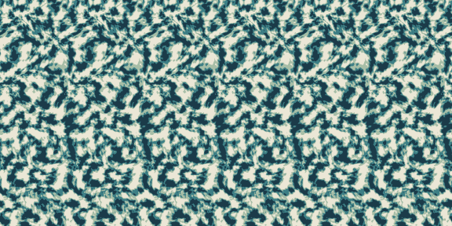
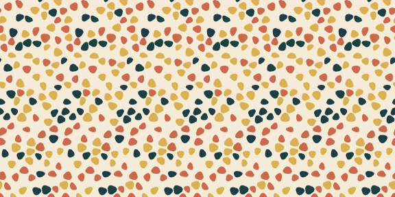
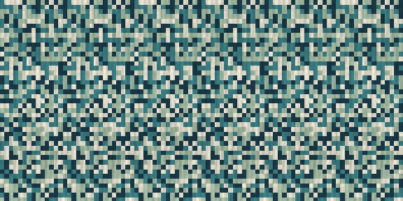
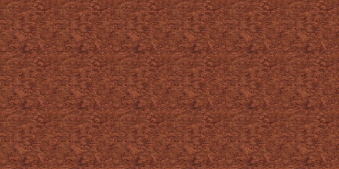

Magic Eye Maker — User Guide¶
Magic Eye Maker uses the active camera and scene geometry as depth for an autostereogram. A procedural pattern or your own images provide the visible surface.
Installation¶
- Download the Magic Eye Maker release ZIP.
- Leave the ZIP intact.
- Open Edit → Preferences → Get Extensions.
- Open the menu in the upper-right corner and choose Install from Disk.
- Select the ZIP and enable Magic Eye Maker if Blender does not do so automatically.
The panel is in 3D Viewport → Sidebar → Magic Eye. Installation may take longer than a smaller add-on because the required components are included in the package.
{kind=link}
Output and frames¶
Choose a dedicated Output Folder for each project. A later run will overwrite existing files with the same name.
Remove Temp Files removes the internal _TempDepth folder after a run. Open Folder When Finished opens the output folder after a successful preview or completed generation run.
Current Frame creates one stereogram. Animation Range uses Magic Eye Maker's own Start, End, and Step values, independently of Blender's timeline range. Preview always processes the current frame.
For animation depth:
- Per Frame renders new depth for every output frame. Use it when geometry or the camera changes.
- Static Depth renders depth once and reuses it. Use it when only the visible pattern changes.
- Static Depth Frame selects the source frame.
-1uses the first output frame.
Set resolution and final image format in Blender's Output Properties. Animation output is an image sequence. PNG, TIFF, Targa, BMP, and lossless WebP are supported for final stereograms; other selections use PNG.
Depth Map / Viewport¶
Fit Mist Range¶
After framing the subject with the active camera, click Fit Mist Range. It estimates suitable Mist Start and Mist Range Length values from render-enabled object bounds inside the camera view.
Start with Mist Falloff: Linear and Depth Gamma: 1. Refit after moving the camera or important objects. The result is a starting point; occluded geometry, transparency, render-only changes, or animation may require manual adjustment.
Depth controls¶
| Control | Purpose |
|---|---|
| Mist Start | Camera distance where the Mist range begins. |
| Mist Range Length | Distance covered by the range. Its far end is Start plus Range Length. |
| Mist Falloff | Changes the response between near and far depth. Linear is the neutral starting point. |
| Depth Gamma | Reshapes values within the range. A value of 1 is neutral. |
| Smooth Depth | Softens jagged or abrupt depth edges. |
| Depth Smooth Radius | Controls the amount of smoothing. |
Fit the Mist range before changing Gamma. Gamma cannot restore detail already clipped or compressed by an unsuitable range.
Preview Mist temporarily shows Mist, Gamma, and smoothing in the viewport. It does not show Normalize Depth, Depth Inversion, Stereogram Depth Strength, Stereogram Smoothing, or Reduce Banding. These controls are found under Advanced and affect rendered depth or the final stereogram.
Use Preview to render a processed-depth image when judging the final depth mapping.
This example uses the same Suzanne object and camera throughout. Open an image to inspect it at full size.
{kind=link}
{kind=link}
{kind=link}
{kind=link}
Pattern sources¶
| Pattern Source | Description |
|---|---|
| Organic Noise | Full-coverage, ink-like regions with fine structure. |
| Graphic Motifs | Repeating pebbles, dashes, or angular chips. |
| Noise | Procedural cell, weave, line, wave, or checker textures. |
| Image Pattern | One image or a list of image layers. |




Pattern Width controls the width of the repeating horizontal strip. Smaller widths create more repetitions; larger widths create fewer repetitions and can be harder to view.
Seed controls procedural variation. -1 creates a new seed for each run. Use a fixed value when comparing settings or testing animation.
Palette controls procedural colors. Strong tonal and color differences usually provide clearer matching detail than a nearly uniform palette.
Organic Noise¶
Use Feature Size for the scale of the main regions and Fine Detail for smaller structure. Smaller features generally provide more stereo cues.
Graphic Motifs¶
Choose Pebbles, Dashes, or Chips with Motif Family. Density controls the spacing. The first palette color is the background.
Noise¶
Use Cell Size, Texture Style, and Style Strength to control the structure. Choose Grayscale, palette-based color, or RGB Noise.
Look Preset¶
Look Preset provides ready-made treatments for Noise and Image Pattern. Soft reduces contrast, Graphic sharpens the pattern, Retro reduces color steps, Organic softens the colors, Minimal reduces color detail, and Noisy adds texture. These presets affect the visible pattern without changing the hidden form.
Image Pattern and layers¶
Choose Image Pattern, then select a Blender image in Single Image or use the folder button to load one. Preserve Aspect keeps the source proportions while it is resized and tiled.
{kind=link}
Use Add Layer Images to load several files or Add Empty Layer to select images already in Blender. Each layer has wrapped X Offset and Y Offset controls. If any layer has an assigned image, Single Image is ignored.
Layer modes are:
- Stack Bands divides the pattern into horizontal bands, one per active image.
- Tile Bands repeats the prepared band sequence down the pattern.
- Overlay composites full-size layers in list order, with later layers above earlier layers.
In Overlay mode, Overlay Opacity affects layers after the first and Image Background appears behind transparent areas. The final stereogram is flattened to RGB.
For animated images, select an Image Sequence or Movie image datablock. Image Frames: Scene Frame follows the scene/output frame; Static holds one source frame. Frame Offset changes the chosen source frame, and Loop Movie/Sequence wraps playback.
For dependable playback, use a numbered image sequence with no missing frames. Image Frames chooses which source image is used, while Pattern Animation moves or changes the resulting pattern. If both are animated, they change at the same time but are controlled separately.
Pattern animation¶
| Mode | Behavior |
|---|---|
| Static | Keeps the pattern placement fixed. |
| Jump | Regenerates procedural patterns or changes image offsets each frame. |
| Flow | Moves the pattern along a smooth drifting path. |
| Crawl | Moves the pattern horizontally. |
| Scroll | Moves the pattern vertically. |
Enable Loop Output Range to fit whole Flow, Crawl, or Scroll cycles into the output Start, End, and Step range. Loop Count sets the number of cycles.
The cycle closes on the next sample after the final exported frame. For frames 1–24 at Step 1, frame 25 would match frame 1; a duplicate closing frame is not exported.
Loop Output Range affects pattern movement only. Animated geometry, camera movement, and animated image sources must be looped separately if the complete result needs to repeat seamlessly.
Advanced settings¶
{kind=link}
Final Stereogram Only¶
- Stereogram Depth Strength changes how strongly depth affects pattern spacing. High values can create artifacts or break the stereogram illusion. Start with the default and increase it gradually while testing.
- Stereogram Smoothing calculates at a larger internal size before reducing the result, producing a smoother image.
- Reduce Banding uses at least 2× smoothing to reduce stepped depth contours.
Rendered Depth Only¶
- Normalize Depth maps the rendered depth range across the available values.
- Depth Inversion reverses the near/far mapping when the hidden form appears inside-out.
These controls affect processed depth and the final stereogram, but not the viewport Mist preview.
Leave Acceleration on Auto for normal use. The first accelerated generation can take longer while its calculation is prepared. 16-bit Depth Preview changes the precision of the exported processed-depth PNG only.
Output files¶
For frame 1, Magic Eye Maker creates files such as:
MagicEyeOutput/
stereogram_0001.png
PatternPreview/
pattern_0001.png
DepthMaps/
depth_0001_raw_.exr
ProcessedDepthPreview/
processed_depth_0001.png
Preview creates the pattern, raw-depth, and processed-depth files. Generate creates the final stereogram and does not create a new preview set.
Latest Outputs shows the most recently recorded file of each type. Entries can come from different runs, so use the output folder when checking a complete animation sequence.
Improving quality and speed¶
- Fit the Mist range before changing Gamma.
- Use small, distributed pattern details with visible tonal differences.
- Keep Stereogram Depth Strength moderate.
- Use Smooth Depth only when abrupt depth edges need softening.
- Keep Reduce Banding enabled when stepped displacement is visible.
- Compare the Pattern Preview, processed depth, and final stereogram to locate a problem.
- Avoid lossy compression or non-uniform resizing after generation.
For faster tests, reduce the resolution, shorten the frame range, and use Static Depth when the hidden form does not move.
Viewing the result¶
Open the final image at a comfortable size. Relax your focus and look through the image as though focusing behind the screen until repeated parts of the pattern merge. Take a break if viewing becomes uncomfortable.
Troubleshooting and support¶
For common problems, see the Magic Eye Maker FAQ.
When reporting a problem, include your Blender version, Magic Eye Maker version, operating system, pattern source, output frame range, exact reproduction steps, and the complete error message. The Pattern Preview, raw depth, and processed-depth files are also useful for depth or image-quality problems.